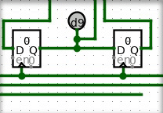

| Library: | Mouse Tools |
| Introduced: | 4.0.3 HC |
The cutter tool is for removing wire segments or entire wire paths.
 Clicking on a wire segment will remove just that wire segment.
Holding shift while clicking on a wire segment will remove that wire segment along with all other segments connected to it, recursively. This removes an entire path.
Clicking and dragging in an blank area of the canvas will select a rectangular region in red. Any portions of wires passing through this box will be removed.
None.